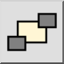

Това е автоматичен превод.
Лентата с инструменти / Икона:

Меню: Промяна на > Ред за изтегляне > Изпращане към Назад
Кратък път: M, B
Команди: toback | mb
Променя реда, в който се показват същностите. Използвайте този инструмент, за да изпратите във фонов режим обекти, които скриват други обекти.